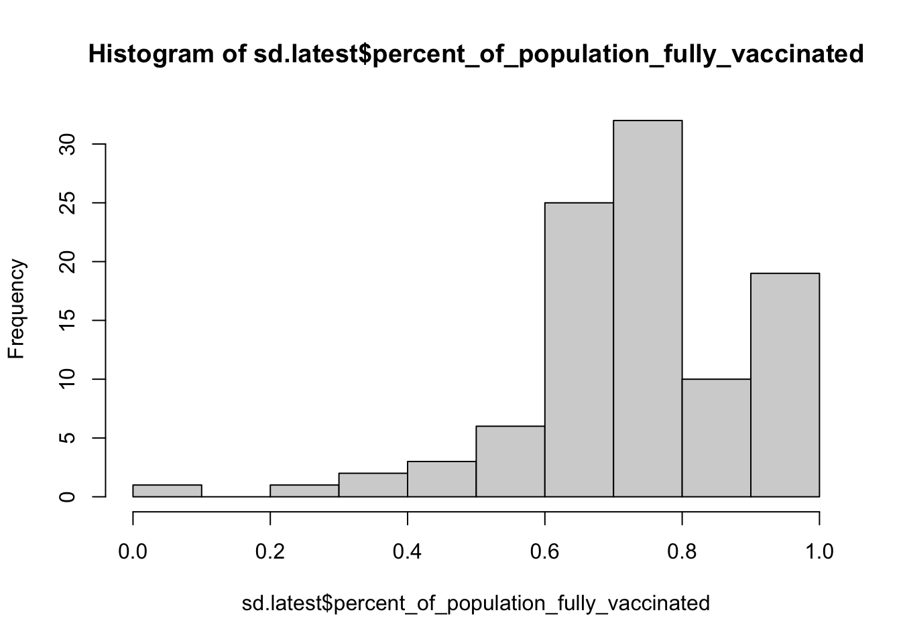
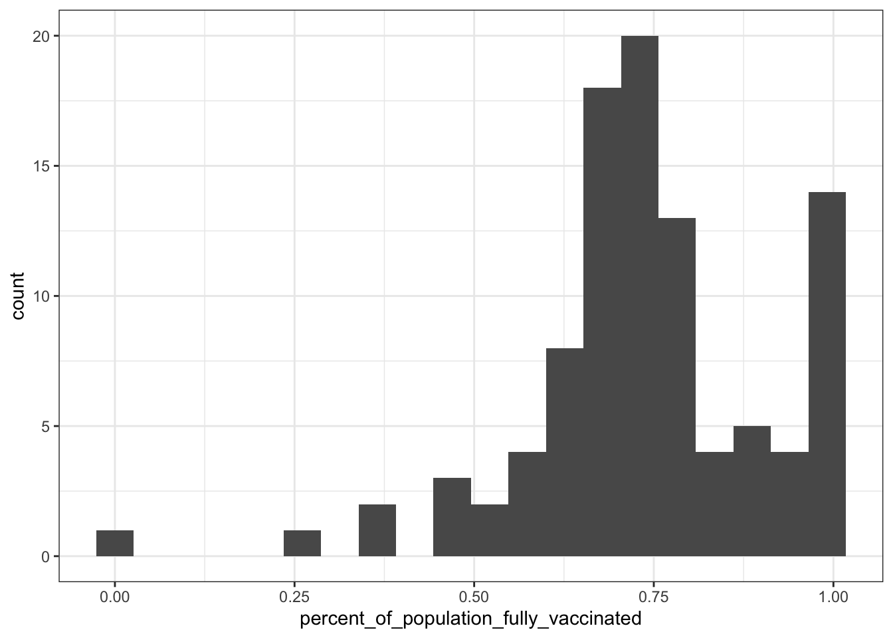
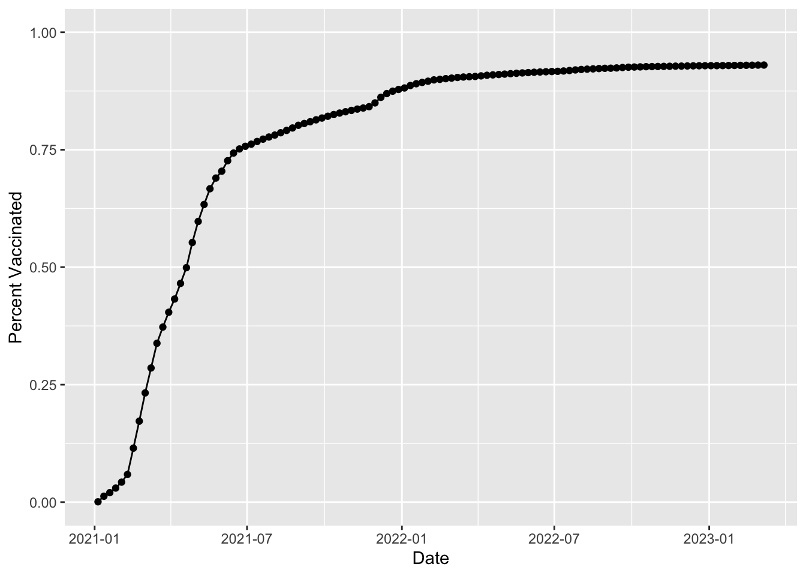
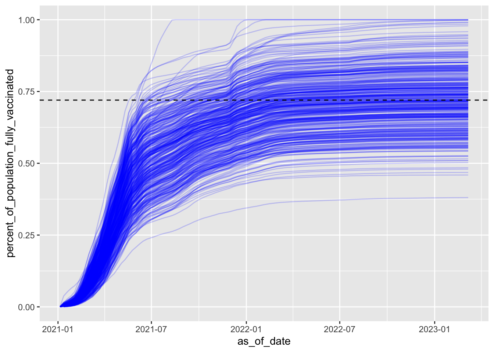

vax <- read.csv("covid19vaccinesbyzipcode_test.csv")
#head(vax)lab17
Data Input
Background
Quick EDA
vax$as_of_date[1][1] "2021-01-05"tail(vax$as_of_date,n=1)[1] "2023-03-07"# unique(vax$as_of_date)skimr::skim(vax)| Name | vax |
| Number of rows | 201096 |
| Number of columns | 18 |
| _______________________ | |
| Column type frequency: | |
| character | 5 |
| numeric | 13 |
| ________________________ | |
| Group variables | None |
Variable type: character
| skim_variable | n_missing | complete_rate | min | max | empty | n_unique | whitespace |
|---|---|---|---|---|---|---|---|
| as_of_date | 0 | 1 | 10 | 10 | 0 | 114 | 0 |
| local_health_jurisdiction | 0 | 1 | 0 | 15 | 570 | 62 | 0 |
| county | 0 | 1 | 0 | 15 | 570 | 59 | 0 |
| vem_source | 0 | 1 | 15 | 26 | 0 | 3 | 0 |
| redacted | 0 | 1 | 2 | 69 | 0 | 2 | 0 |
Variable type: numeric
| skim_variable | n_missing | complete_rate | mean | sd | p0 | p25 | p50 | p75 | p100 | hist |
|---|---|---|---|---|---|---|---|---|---|---|
| zip_code_tabulation_area | 0 | 1.00 | 93665.11 | 1817.38 | 90001 | 92257.75 | 93658.50 | 95380.50 | 97635.0 | ▃▅▅▇▁ |
| vaccine_equity_metric_quartile | 9918 | 0.95 | 2.44 | 1.11 | 1 | 1.00 | 2.00 | 3.00 | 4.0 | ▇▇▁▇▇ |
| age12_plus_population | 0 | 1.00 | 18895.04 | 18993.87 | 0 | 1346.95 | 13685.10 | 31756.12 | 88556.7 | ▇▃▂▁▁ |
| age5_plus_population | 0 | 1.00 | 20875.24 | 21105.97 | 0 | 1460.50 | 15364.00 | 34877.00 | 101902.0 | ▇▃▂▁▁ |
| tot_population | 9804 | 0.95 | 23372.77 | 22628.50 | 12 | 2126.00 | 18714.00 | 38168.00 | 111165.0 | ▇▅▂▁▁ |
| persons_fully_vaccinated | 16621 | 0.92 | 13990.39 | 15073.66 | 11 | 932.00 | 8589.00 | 23346.00 | 87575.0 | ▇▃▁▁▁ |
| persons_partially_vaccinated | 16621 | 0.92 | 1702.31 | 2033.32 | 11 | 165.00 | 1197.00 | 2536.00 | 39973.0 | ▇▁▁▁▁ |
| percent_of_population_fully_vaccinated | 20965 | 0.90 | 0.57 | 0.25 | 0 | 0.42 | 0.61 | 0.74 | 1.0 | ▂▃▆▇▃ |
| percent_of_population_partially_vaccinated | 20965 | 0.90 | 0.08 | 0.09 | 0 | 0.05 | 0.06 | 0.08 | 1.0 | ▇▁▁▁▁ |
| percent_of_population_with_1_plus_dose | 22009 | 0.89 | 0.63 | 0.24 | 0 | 0.49 | 0.67 | 0.81 | 1.0 | ▂▂▅▇▆ |
| booster_recip_count | 72997 | 0.64 | 5882.76 | 7219.00 | 11 | 300.00 | 2773.00 | 9510.00 | 59593.0 | ▇▂▁▁▁ |
| bivalent_dose_recip_count | 158776 | 0.21 | 2978.23 | 3633.03 | 11 | 193.00 | 1467.50 | 4730.25 | 27694.0 | ▇▂▁▁▁ |
| eligible_recipient_count | 0 | 1.00 | 12830.83 | 14928.64 | 0 | 507.00 | 6369.00 | 22014.00 | 87248.0 | ▇▃▁▁▁ |
n_missing <- sum(is.na(vax$persons_fully_vaccinated))
percent_n_missing <- round(n_missing/nrow(vax)*100,2)
percent_n_missing[1] 8.27library(lubridate)
today()-ymd(vax$as_of_date[1])Time difference of 792 daystoday()-ymd("1997-03-23")Time difference of 9481 daystoday()-ymd("2021-11-23")Time difference of 470 daysvax$as_of_date <- ymd(vax$as_of_date)
today() - vax$as_of_date[nrow(vax)]Time difference of 1 dayslibrary(dplyr)
Attaching package: 'dplyr'The following objects are masked from 'package:stats':
filter, lagThe following objects are masked from 'package:base':
intersect, setdiff, setequal, unionn_distinct(vax$as_of_date)[1] 114library(zipcodeR)
geocode_zip('92037')# A tibble: 1 × 3
zipcode lat lng
<chr> <dbl> <dbl>
1 92037 32.8 -117.reverse_zipcode(c('92037', "92109") )# A tibble: 2 × 24
zipcode zipcode_…¹ major…² post_…³ common_c…⁴ county state lat lng timez…⁵
<chr> <chr> <chr> <chr> <blob> <chr> <chr> <dbl> <dbl> <chr>
1 92037 Standard La Jol… La Jol… <raw 20 B> San D… CA 32.8 -117. Pacific
2 92109 Standard San Di… San Di… <raw 21 B> San D… CA 32.8 -117. Pacific
# … with 14 more variables: radius_in_miles <dbl>, area_code_list <blob>,
# population <int>, population_density <dbl>, land_area_in_sqmi <dbl>,
# water_area_in_sqmi <dbl>, housing_units <int>,
# occupied_housing_units <int>, median_home_value <int>,
# median_household_income <int>, bounds_west <dbl>, bounds_east <dbl>,
# bounds_north <dbl>, bounds_south <dbl>, and abbreviated variable names
# ¹zipcode_type, ²major_city, ³post_office_city, ⁴common_city_list, …sd_zip <- unique(vax$zip_code_tabulation_area[vax$county == "San Diego"])
sd_eco <- reverse_zipcode(sd_zip)
sd_eco# A tibble: 107 × 24
zipcode zipcode…¹ major…² post_…³ common_c…⁴ county state lat lng timez…⁵
<chr> <chr> <chr> <chr> <blob> <chr> <chr> <dbl> <dbl> <chr>
1 91901 Standard Alpine Alpine… <raw 18 B> San D… CA 32.8 -117. Pacific
2 91902 Standard Bonita Bonita… <raw 18 B> San D… CA 32.7 -117. Pacific
3 91905 Standard Boulev… Boulev… <raw 21 B> San D… CA 32.7 -116. Pacific
4 91906 Standard Campo Campo,… <raw 17 B> San D… CA 32.7 -116. Pacific
5 91910 Standard Chula … Chula … <raw 23 B> San D… CA 32.6 -117. Pacific
6 91911 Standard Chula … Chula … <raw 23 B> San D… CA 32.6 -117. Pacific
7 91913 Standard Chula … Chula … <raw 23 B> San D… CA 32.6 -117. Pacific
8 91914 Standard Chula … Chula … <raw 23 B> San D… CA 32.7 -117. Pacific
9 91915 Standard Chula … Chula … <raw 23 B> San D… CA 32.6 -117. Pacific
10 91916 Standard Descan… Descan… <raw 20 B> San D… CA 32.9 -117. Pacific
# … with 97 more rows, 14 more variables: radius_in_miles <dbl>,
# area_code_list <blob>, population <int>, population_density <dbl>,
# land_area_in_sqmi <dbl>, water_area_in_sqmi <dbl>, housing_units <int>,
# occupied_housing_units <int>, median_home_value <int>,
# median_household_income <int>, bounds_west <dbl>, bounds_east <dbl>,
# bounds_north <dbl>, bounds_south <dbl>, and abbreviated variable names
# ¹zipcode_type, ²major_city, ³post_office_city, ⁴common_city_list, …ord <- order(sd_eco$median_household_income)
sd_eco[ord,]$median_household_income [1] 24426 27675 36621 37143 37534 37987 38021 38563 40539 40557
[11] 41607 41866 45983 46580 46856 46875 47559 47947 48111 49268
[21] 49521 49521 49534 50750 51158 51542 51694 52242 52550 53167
[31] 53448 53843 54056 54441 54448 55839 55938 56310 57350 57618
[41] 58079 59719 59849 60313 60929 61067 62092 63098 63449 64004
[51] 64026 64033 64044 64478 64926 65869 65871 67616 69601 69678
[61] 69821 70264 71100 71412 71628 72206 73333 76273 79792 80463
[71] 81000 81505 81835 82075 84299 86406 86981 87701 90417 90960
[81] 91103 92531 93750 94665 96153 99367 99412 100100 103393 104063
[91] 107870 114880 120106 124099 125051 127968 131406 226875 NA NA
[101] NA NA NA NA NA NA NAlibrary(dplyr)
sd <- filter(vax, county == "San Diego")
sd.10 <- filter(vax, county == "San Diego" &
age5_plus_population > 10000)sd.latest <- filter(sd, as_of_date == "2023-03-07")
mean(sd.latest$percent_of_population_fully_vaccinated,na.rm=T)[1] 0.7402567hist(sd.latest$percent_of_population_fully_vaccinated)
library(ggplot2)
ggplot(sd.latest, aes(x=percent_of_population_fully_vaccinated)) + geom_histogram(bins=20) +
theme_bw() + xlab("percent_of_population_fully_vaccinated")Warning: Removed 8 rows containing non-finite values (`stat_bin()`).
ucsd <- filter(sd, zip_code_tabulation_area=="92037")
head(ucsd) as_of_date zip_code_tabulation_area local_health_jurisdiction county
1 2021-01-05 92037 San Diego San Diego
2 2021-01-12 92037 San Diego San Diego
3 2021-01-19 92037 San Diego San Diego
4 2021-01-26 92037 San Diego San Diego
5 2021-02-02 92037 San Diego San Diego
6 2021-02-09 92037 San Diego San Diego
vaccine_equity_metric_quartile vem_source
1 4 Healthy Places Index Score
2 4 Healthy Places Index Score
3 4 Healthy Places Index Score
4 4 Healthy Places Index Score
5 4 Healthy Places Index Score
6 4 Healthy Places Index Score
age12_plus_population age5_plus_population tot_population
1 33675.6 36144 38168
2 33675.6 36144 38168
3 33675.6 36144 38168
4 33675.6 36144 38168
5 33675.6 36144 38168
6 33675.6 36144 38168
persons_fully_vaccinated persons_partially_vaccinated
1 29 1362
2 480 1603
3 770 3494
4 1143 6091
5 1625 8241
6 2249 9403
percent_of_population_fully_vaccinated
1 0.000760
2 0.012576
3 0.020174
4 0.029947
5 0.042575
6 0.058924
percent_of_population_partially_vaccinated
1 0.035684
2 0.041999
3 0.091543
4 0.159584
5 0.215914
6 0.246358
percent_of_population_with_1_plus_dose booster_recip_count
1 0.036444 NA
2 0.054575 NA
3 0.111717 NA
4 0.189531 NA
5 0.258489 NA
6 0.305282 NA
bivalent_dose_recip_count eligible_recipient_count
1 NA 29
2 NA 480
3 NA 770
4 NA 1143
5 NA 1625
6 NA 2249
redacted
1 Information redacted in accordance with CA state privacy requirements
2 Information redacted in accordance with CA state privacy requirements
3 Information redacted in accordance with CA state privacy requirements
4 Information redacted in accordance with CA state privacy requirements
5 Information redacted in accordance with CA state privacy requirements
6 Information redacted in accordance with CA state privacy requirementsucsd[1,]$age5_plus_population[1] 36144ijplot <- ggplot(ucsd) +
aes(as_of_date,persons_fully_vaccinated/tot_population) +
geom_point() +
geom_line(group=1) +
ylim(c(0,1)) +
labs(x="Date", y="Percent Vaccinated")
ijplot
vax.36 <- filter(vax,age5_plus_population > 36144 & as_of_date == "2023-03-07")
head(vax.36) as_of_date zip_code_tabulation_area local_health_jurisdiction county
1 2023-03-07 94116 San Francisco San Francisco
2 2023-03-07 92703 Orange Orange
3 2023-03-07 94118 San Francisco San Francisco
4 2023-03-07 92376 San Bernardino San Bernardino
5 2023-03-07 92692 Orange Orange
6 2023-03-07 95148 Santa Clara Santa Clara
vaccine_equity_metric_quartile vem_source
1 4 Healthy Places Index Score
2 1 Healthy Places Index Score
3 4 Healthy Places Index Score
4 1 Healthy Places Index Score
5 4 Healthy Places Index Score
6 4 Healthy Places Index Score
age12_plus_population age5_plus_population tot_population
1 42334.3 45160 47346
2 57182.7 64387 69112
3 37628.5 40012 42095
4 70232.1 79686 86085
5 41008.9 44243 46800
6 42163.3 46202 48273
persons_fully_vaccinated persons_partially_vaccinated
1 41255 2450
2 57887 7399
3 33284 3040
4 51367 5674
5 35117 2603
6 42298 2684
percent_of_population_fully_vaccinated
1 0.871351
2 0.837582
3 0.790688
4 0.596701
5 0.750363
6 0.876225
percent_of_population_partially_vaccinated
1 0.051747
2 0.107058
3 0.072218
4 0.065912
5 0.055620
6 0.055600
percent_of_population_with_1_plus_dose booster_recip_count
1 0.923098 34108
2 0.944640 28297
3 0.862906 27401
4 0.662613 23832
5 0.805983 23695
6 0.931825 31583
bivalent_dose_recip_count eligible_recipient_count redacted
1 19158 41000 No
2 7627 57775 No
3 15251 33146 No
4 6393 51276 No
5 10169 35031 No
6 12604 42120 Noijplot + geom_hline(yintercept = 0.72, linetype=2)vax %>% filter(as_of_date == "2023-02-28") %>%
filter(zip_code_tabulation_area=="92040") %>%
select(percent_of_population_fully_vaccinated) percent_of_population_fully_vaccinated
1 0.550469filter(vax.36, zip_code_tabulation_area %in% c("92109","02040")) as_of_date zip_code_tabulation_area local_health_jurisdiction county
1 2023-03-07 92109 San Diego San Diego
vaccine_equity_metric_quartile vem_source
1 3 Healthy Places Index Score
age12_plus_population age5_plus_population tot_population
1 43222.5 44953 47111
persons_fully_vaccinated persons_partially_vaccinated
1 32725 4234
percent_of_population_fully_vaccinated
1 0.694636
percent_of_population_partially_vaccinated
1 0.089873
percent_of_population_with_1_plus_dose booster_recip_count
1 0.784509 19677
bivalent_dose_recip_count eligible_recipient_count redacted
1 8109 32622 Novax.36.all <- filter(vax, age5_plus_population > 36144)
ggplot(vax.36.all) +
aes(as_of_date,
percent_of_population_fully_vaccinated,
group=zip_code_tabulation_area) +
geom_line(alpha=0.2, color="blue") +
ylim(0,1) +
geom_hline(yintercept = 0.72, linetype=2)Warning: Removed 183 rows containing missing values (`geom_line()`).